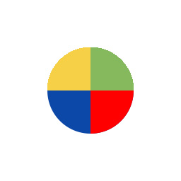

3D Gaussian Splatting (3D GS) is widely adopted for novel view synthesis due to its high training and rendering efficiency. However, its efficiency relies on the key assumption that Gaussians do not overlap in the 3D space, which leads to noticeable artifacts and view inconsistencies. In addition, the inherently diffuse boundaries of Gaussians hinder accurate reconstruction of sharp object edges. We propose Softmax-GS, a unified solution that addresses both the view-inconsistency and the diffuse-boundary problem by enforcing a softmax-based competition in overlapping regions between two Gaussians. With learnable parameters controlling the strength of the competition, it enables a continuous spectrum from smooth color blending to crisp, well-defined boundaries. Our formulation explicitly preserves order invariance for any two overlapping Gaussians and ensures that the output transmittance remains unchanged irrespective of the extent of overlapping, preventing undesirable discontinuities in the rendered output. Ablation experiments on simple geometries demonstrate the effectiveness of each component of Softmax-GS, and evaluations on real-world benchmarks show that it achieves state-of-the-art performance, improving both reconstruction quality and parameter efficiency.
